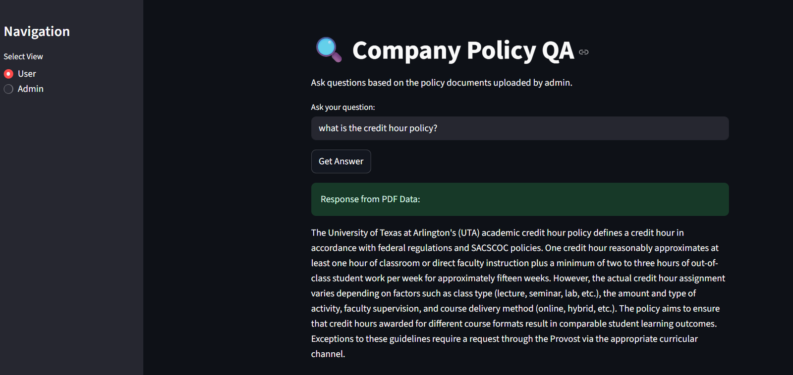

AI RAG Docs: A Chatbot That Cites Its Sources
A chatbot that answers questions from a set of documents and says which page each answer came from, running on local hardware where it can.
- Active
- 2025–present
- Generative AI
- Retrieval-augmented generation
- Language models
- Local AI

In plain English
Large language models answer fluently, but they cannot be trusted to answer from your own documents unless they are made to. Retrieval-augmented generation (RAG) does that: it finds the passages most relevant to a question, gives only those to the model, and asks for an answer grounded in them. In 2025 SEAR Lab students built a question-and-answer agent for long university policy documents. Staff could ask in plain English and get an answer with page citations, and an administrator view let them upload documents, see the questions the agent could not answer, and write answers that fed back into it. Later versions moved from a cloud model to open models run locally, and added keyword search alongside meaning-based search. A parallel strand read scanned policy PDFs with optical character recognition.
In 2026 the work turned inward. The current chatbot answers questions about the lab's own research papers, citing document and page, and can look up lab equipment in the inventory. It runs locally and deliberately has no public demo, because hosting one would mean publishing the document collection itself.
Main points
- Answers are grounded in retrieved passages and cite the document and page they came from.
- It flags questions it cannot answer from the documents instead of guessing.
- An admin view lets staff upload documents, review unanswered questions and supply corrected answers.
- Open models run locally, so documents need not leave the machine.
- The current version indexes the lab's papers and inventory, and re-indexes only what has changed.
People
- Erick C. Jones Jr., PhD, PEPrincipal Investigator · SEAR Lab directorin
- Devaki Sudhakaran JeevanStudent researcher (2025): interface and page citationsin
- Athira S PillaiStudent researcher (2025): backend and local modelsin
- Varad NairStudent researcher (2025): indexing and the answer store
- Venkata Sai Nikhil VuyyuruStudent researcher (2025): hybrid retrieval and testing
- Thanmayee Karuhatti ShashikumarStudent researcher (2025): scanned-document strand
- Deepak Ramoji RaoStudent researcher (2025): scanned-document strand
- Sunny Kiran GangarStudent researcher (2025): scanned-document strand
- Srigreeshma AvunooriStudent researcher (2025): scanned-document strand
- Rishika Ravi KukuttalaStudent researcher (2025): scanned-document strand
- Anirudh Kashyap RStudent researcher (2026 team)
- Anannya ChamatStudent researcher (2026 team)
- Somitra KushwahStudent researcher (2026 team)
- Bhargav PatelStudent researcher (2026 team)
- Pavan Babu BheesettiStudent researcher (2026 team)
Also contributed: Abhay Bhaskar Mallampalli, Viren Rathod, Urekha Kulala, Vishnu Badam, Komal Gujar, Lokesh Kuyyamudi Bharath, Lakshmi Priyanka Bhallamudi, Anand Manohar Agnihotram, Anish Jamedar, Srujan Chinta and Savan Reddy Poduturi. Profiles marked in link to LinkedIn. More past and present lab members are on the SEAR Lab team page.